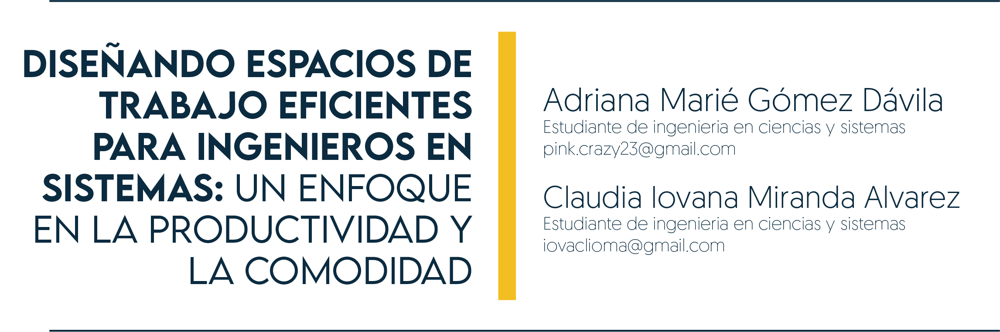

3 Diseñando Espacios de Trabajo Eficientes para Ingenieros en Sistemas: Un Enfoque en la Productividad y la Comodidad

3.1 Introducción
La ergonomía es una disciplina que se enfoca en el diseño de ambientes de trabajo y así como el diseño de productos que se adapten a las necesidades fisiológicas, anatómicas y psicológicas humanas para mejorar la eficiencia, la productividad y la salud. En el ámbito laboral, la ergonomía cobra gran importancia ya que su fin es reducir el riesgo de lesiones musculoesqueléticas y mejorar el bienestar de los trabajadores.
La ergonomía es importante para los ingenieros en sistemas, debido al sedentario y a las tareas repetitivas de esta profesión, que aumentan el riesgo de lesiones de espalda, cuello y hombros, así como fatiga visual, al contar con un espacio de trabajo propicio para el bienestar físico y la productividad laboral.
3.2 Innovación
Con el avance y desarrollo de la tecnología, uno de los principales problemas que enfrentan en la actualidad los ingenieros en sistemas son los trastornos posturales, esto debido a que pasan sentados frente a una computadora escribiendo grandes cantidades de código, sin preocuparse por la posición de su espalada, cuello, codos o muñecas. Los estilos de vida sin actividad física y una postura estática contribuyen a aumentar la fatiga visual y el estrés, lo que puede afectar negativamente tanto la productividad como la salud mental.
Para medir la frecuencia y consecuencia de los transtornos posturales en los trabajadores se realizaron una serie de estudios prospectivos y retrospectivos, incluyendo encuestas, exámenes físicos y seguimiento a largo plazo. La muestra para el estudio fueron programadores que trabajaban en un ambiente de oficina o en su hogar.
Se utilizaron varios métodos, incluidos el registro postural, la evaluación del dolor y la medición de la productividad, para evaluar el impacto de los trastornos de la postura en estos trabajadores. Los resultados indican que los programadores experimentan alteraciones en su postura con una frecuencia significativamente más alta en comparación con otras ocupaciones sedentarias, lo que sugiere que los problemas de postura son reales y deben abordarse lo más pronto posible.
Por lo tanto, es importante que los programadores adopten medidas para prevenir y tratar los trastornos de la postura. Es aquí donde la ergonomía presenta una solución, siendo esta la disciplina encargada de diseñar mobiliario y ambientes de trabajo cómodos y seguros. Al ser tomada en cuenta se disminuye el riesgo de lesiones posturales, enfermedades laborales por el sedentarismo, el ausentismo laboral, se da un aumento en la eficiencia y productividad por la sensación de bienestar y comodidad, aumento de un buen clima laboral.
Es importante que los empleadores y profesionales de la salud trabajen juntos para brindar a los programadores un entorno de trabajo seguro y saludable. Esto incluye proporcionar una guía de ejercicios y estiramientos que puedan ayudar a prevenir y tratar los trastornos de la postura, ejercicios para fortalecer la espalda y los hombros, estiramientos de los músculos del cuello y de la espalda, yoga o meditación para reducir el estrés y mejorar la flexibilidad.
Otro aspecto importante a considerar es tomar pausas activas, en donde se puede caminar por tres minutos cada hora para estimular la circulación y reducir la fatiga visual, física y mental. Igualmente importantes son la alimentación saludable y un estilo de vida activo para ayudar a mantener un peso saludable y mejorar la postura y la flexibilidad.
Un lugar de trabajo ergonómico debe estar diseñado para permitir que los programadores adopten posturas cómodas y variadas durante su jornada laboral. Para permitir que el programador tenga diferentes posturas, esto se puede lograr con un escritorio de altura ajustable, en donde el programador puede trabajar sentado por un periodo de tiempo y luego elevar su escritorio a una altura cómoda para trabajar de pie. También es posible que desee configurar una cinta para correr para que el programador pueda estar físicamente activo mientras trabaja, lo que ayuda a su bienestar físico y mental.
Otra consideración importante al diseñar un espacio de trabajo ergonómico son las sillas que utilizará el programador. Como el programador pasa muchas horas sentados en ella trabajando como para que no sean confortables o puedan producir lesiones. Es importante que la silla le de al programador la capacidad de acomodarse, descansar la espalda y que no esté encorvado. También debe tener una buena altura para que los pies toquen el piso y no estén colgando, además se pueden implementar sillas con programas de masaje para relajar los músculos de espalda y cuello y mejorar la tensión de estas partes del cuerpo.
Es importante que la altura del monitor esté dentro del campo de visión del programador. Para que este no tenga que forzar la vista y mucho menos forzar el cuello por tenerlo muy alto o muy bajo. Si se trabaja con más de un monitor, es importante que la colocación de cada monitor esté cerca para que la rotación del cuello para ver cada pantalla sea lo más cómodo posible.
Para reducir la tensión en las muñecas es necesario considerar ocupar mouses y teclados ergonómicos, en donde permiten que la colocación de las manos sea lo más cómoda posible. Además de implementar esponjas o almohadillas en donde reposar las muñecas al momento de utilizar cada uno.
La iluminación en un espacio de trabajo ergonómico es fundamental para un buen desempeño de los programadores. Esta debe ser lo suficientemente buena para permitir visibilidad sin causar fatiga visual, lo que se logra mediante el uso de luces con una intensidad adecuada y distribución uniforme. También es importante que se priorice tener luz solar.
La ergonomía mejora la eficiencia y la productividad de los trabajadores al reducir el esfuerzo físico y mental requerido para realizar una tarea. Es muy importante ya que ayuda a reducir lesiones y enfermedades relacionadas con el trabajo, como lesiones musculoesqueléticas y problemas de estrés y fatiga. Cuando hablamos de la salud y bienestar de los trabajadores, la ergonomía puede tener un impacto positivo en la rentabilidad y el éxito de las empresas, ya que ofrece satisfacción y motivación a los trabajadores al proporcionar un ambiente de trabajo más seguro, cómodo y agradable.
3.3 Conlusiones
La ergonomía mejora la eficiencia y la productividad de los trabajadores al reducir el esfuerzo físico y mental requerido para realizar una tarea. Es muy importante ya que ayuda a reducir lesiones y enfermedades relacionadas con el trabajo, como lesiones musculoesqueléticas y problemas de estrés y fatiga. Cuando hablamos de la salud y bienestar de los trabajadores, la ergonomía puede tener un impacto positivo en la rentabilidad y el éxito de las empresas, ya que ofrece satisfacción y motivación a los trabajadores al proporcionar un ambiente de trabajo más seguro, cómodo y agradable.
3.4 Referencia
[1] Soe, Kyaw Thu, Orapin Laosee, Suwassa Limsatchapanich, y Cheerawit Rattanapan. 2015. “Prevalence and Risk Factors of Musculoskeletal Disorders among Myanmar Migrant Workers in Thai Seafood Industries”. International Journal of Occupational Safety and Ergonomics: JOSE 21 (4): 539–46.https://doi.org/10.1080/10803548.2015.1096609 [Último acceso: 03 de marzo 2023].
[2] Wu, Shanshan, Lihua He, Jingyun Li, Jianxin Wang, y Sheng Wang. 2012. “Visual Display Terminal Use Increases the Prevalence and Risk of Work-Related Musculoskeletal Disorders among Chinese Office Workers: A Cross-Sectional Study”. Journal of Occupational Health 54 (1): 34–43. https://doi.org/10.1539/joh.11-0119-oa [Último acceso: 03 de marzo 2023].
[3] Esmaeilzadeh, Sina, Emel Ozcan, y Nalan Capan. 2014. “Effects of Ergonomic Intervention on Work-Related Upper Extremity Musculoskeletal Disorders among Computer Workers: A Randomized Controlled Trial”. International Archives of Occupational and Environmental Health 87 (1): 73–83. https://doi.org/10.1007/s00420-012-0838-5 [Último acceso: 03 de marzo 2023].